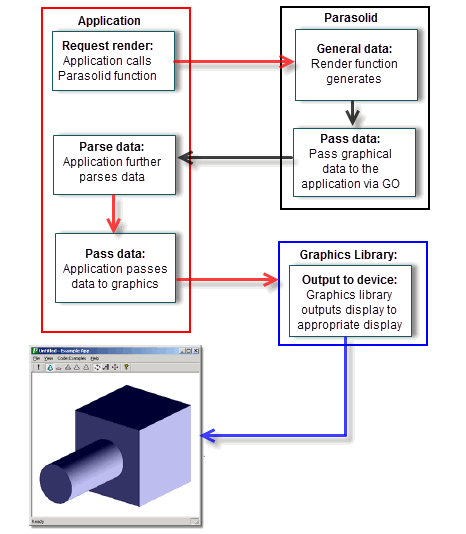
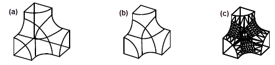
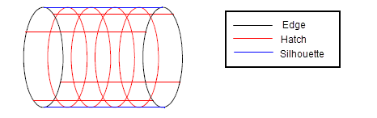
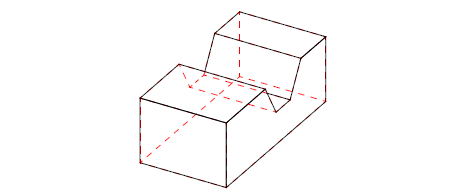
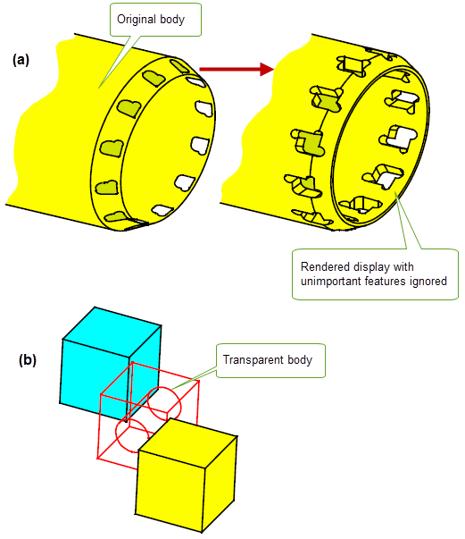
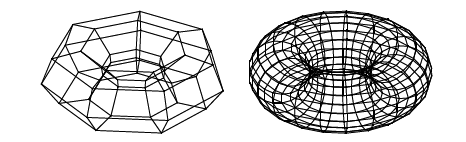

| |
Displaying Data |
| <<< Enquiring Model Data and Identifying Details | Chapters | Application Support >>> |
Parasolid generates rendering, faceting and graphical data that you can use to produce pictures of the models you create. There are several steps to this process:
Parasolid provides a number of rendering and faceting functions: the one you choose depends on the type of display your application is generating and the method you are using to produce it. This chapter provides an overview of the functionality offered by these functions:
Figure 14-1 gives an overview of the steps involved in creating and processing graphical data for use on an output device.
Figure 14-1 Processing graphical data for display on an output device
In order to produce a picture of a model, graphical data is sent from Parasolid to your application using the GO functions that you to supply. These functions encapsulate the graphical data created by Parasolid, and Parasolid calls them whenever your application calls a Parasolid faceting or rendering function.
Once your application has the graphical data, it can further parse it if required, depending on the nature of the data that was requested. For example, if hidden-line data was requested, then Parasolid outputs graphical data with visibility information attached to each data segment. Your application can parse this information so that data segments that are flagged as hidden are displayed using a specific line style, such as that shown in Figure 14-4.
Depending on the functionality required by your application, pictures can be displayed on output devices (typically the user’s computer monitor), or hard copy can be produced on a printer connected to the computer. In order to do this, you must pass the graphical data to a suitable graphics library in order to render the image. You need to provide the graphics library with your application; no graphics library is supplied with Parasolid itself. You can either write one yourself or, more commonly, use a third party library such as OpenGL or DirectX.
Parasolid can generate data that your application can use to create three kinds of picture: wire-frame, hidden-line and faceted. These are illustrated in Figure 14-2.
Figure 14-2 Wire-frame (a), hidden-line (b) and faceted (c) pictures
Wire-frame pictures depict models by drawing their edges. They can optionally include additional information to give the impression of the surfaces bounding the model, such as silhouette lines and hatching lines. However, they do not include information about which parts of the model are visible and which are hidden. Figure 14-3 shows a wire-frame picture of a cylinder that could be produced by an application. It includes both silhouette and hatching information.
Figure 14-3 Wire-frame rendering with silhouette and hatching information
Hidden-line pictures distinguish lines that are visible in the current view from those that are not. Your application can produce pictures in which hidden lines are suppressed entirely (as in Figure 14-2 (b)), or they may be output in a different style, for example, as dashes, or using a different colour, as shown in Figure 14-4. Hidden-line pictures always contain edges and silhouettes, and hatch-lines can also be included if required.
Figure 14-4 Displaying hidden lines in a different style
Parasolid’s hidden-line routines use regional data, so that automatic form-feature recognition and decomposition applications can be implemented. The hidden-line-removal functionality supported by Parasolid also provides data essential for developing advanced “drafting-from-solid” applications.
Parasolid provides many options to control the way rendering data is generated. These include support for:
Figure 14-5 illustrates several of these options.
Figure 14-5 Rendering options: (a) ignoring small features and (b) transparent bodies
Faceting is a means of representing faces as a combination of vertices and straight edges that form planar or near planar facets. Facets generally coincide along adjoining edges, and each facet lies close to its “parent” face (that is, the face that it represents all or a part of), so that (unless you request otherwise) the edge of a face in the model corresponds closely to the edge of one or more facets.
Faceting does not change the entities in a model, it merely provides a different representation of the entities.
The most common use of facet data is to produce shaded 3D images of models: most graphics libraries require facet data in order to produce a shaded image.
Parasolid can generate graphical data in facet form so that your application can support the creation of faceted images if required. Facets can be output either individually, or as strips of connected facets: facet strips are more economical to represent, and many graphics drivers are optimised for this method of hardware shading.
Figure 14-6 Coarse and fine facet representations of a torus
|
Note: Once calculated, facet data can be passed to your application in two ways: |
Parasolid’s powerful faceting functionality can typically be useful in any of the following situations:
Parasolid provides many options to provide control over the style and number of facets created when generating facet data. These include:
The precise combination of faceting options available depends on whether you return facet data to your application using the GO, or using an array table.
| <<< Enquiring Model Data and Identifying Details | Chapters | Application Support >>> |